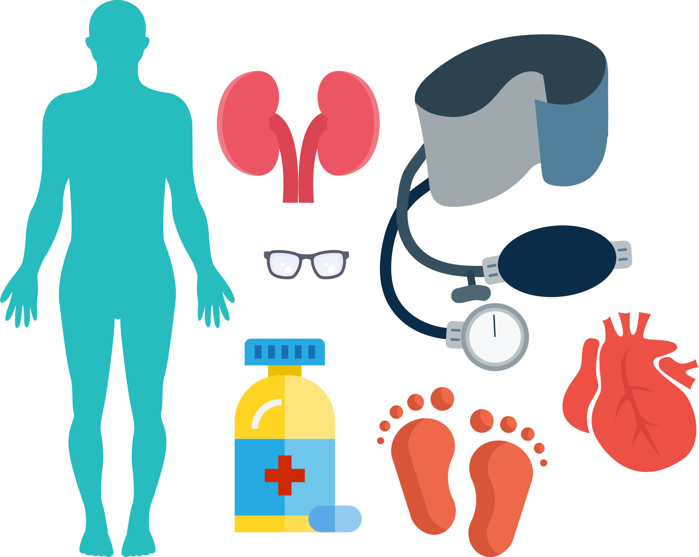

المضاعفات المزمنة
الآن بعد أن فهمت ما هي المضاعفات الحادة، حان الوقت للانتقال إلى فهم المضاعفات المزمنة.
بالنسبة لكل نوع من أنواع المضاعفات، سنتناول ما يلي.
الأعراض والأسباب
قد تكون سلوكيات نمط الحياة سببًا ينتج عنه مضاعفات طويلة الأمدالوقاية
ابدأ الوقاية مبكرًا وامنع حدوث هذه المضاعفات في المقام الأول